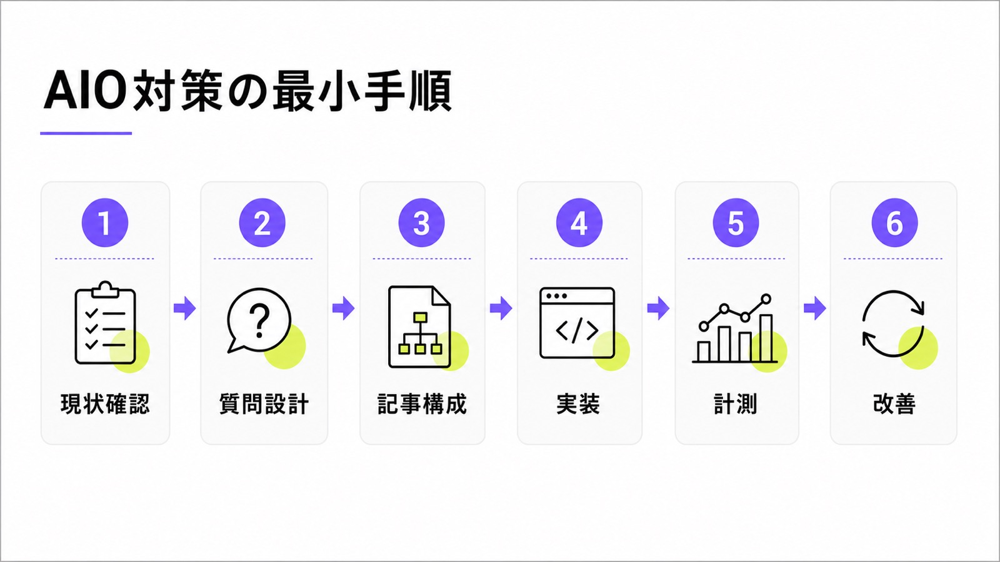
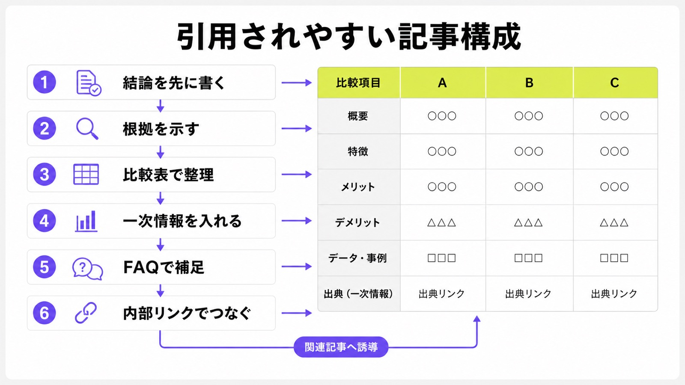
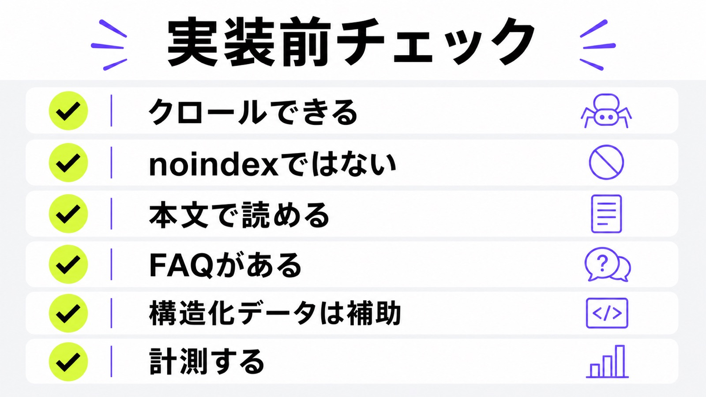

AIO対策のやり方｜AI Overviewに引用されやすい記事構成と実装

AIO対策のやり方を調べる人の多くは、「AI Overviewに自社記事を引用させたい」「AI検索で競合ばかり出る状態を変えたい」と考えています。
ただし、AIO対策はAI専用の裏技を入れる作業ではありません。Googleに読めるページを作り、ユーザーの質問に先に答え、比較や判断に必要な一次情報を本文に置くことが中心です。
この記事では、シート候補の「AIO対策 やり方」という検索意図に合わせて、AI Overviewに引用されやすい記事構成と、公開前後に見る実装ポイントをわかりやすく整理します。AIOとSEOの違いを先に見たい方は、AIOとSEOの違いの記事も参考にしてください。
目次

AIO対策のやり方は「調査して、直して、測る」
AIO対策は、記事を増やす前に現状を見るところから始めます。自社が狙う質問でAI Overviewが出るのか、自社ページが引用されるのか、競合や比較メディアが出るのかを確認し、足りない情報を記事やサービスページに追加します。
まずAI Overviewの表示と引用元を見る
最初に見るのは、対象キーワードでAI Overviewが表示されるかどうかです。「AIO対策 やり方」「AI Overview 引用される方法」のような質問を、同じ地域、同じ端末、同じブラウザ条件で確認します。表示がある場合は、回答文、自社名の有無、引用URL、競合名を記録します。ここで大事なのは、感覚ではなく実際の表示状況を見てから直すことです。
AI Overviewが出ないキーワードでも、ChatGPTやPerplexityで同じ質問を試すと、競合の名前や記事が出ることがあります。Googleだけを見て終わらず、自社の見込み客が使いそうなAI検索を2つか3つに絞って見ます。対象を広げすぎると続かないので、最初は問い合わせに近い質問だけで十分です。
記事を増やす前に既存ページを直す
AIO対策というと新規記事を作りたくなりますが、先に直すべきなのは既存ページです。トップページ、サービスページ、料金、会社概要、FAQ、事例、既存ブログに、AIが回答を作る材料があるかを見ます。結論が薄い、料金がない、会社情報が曖昧、FAQがない場合は、まず既存ページの不足を埋めるほうが早いです。
たとえば、AIMAなら「LLMO専門」「月額5万円」「相談回数の上限なし」「記事作成・修正込み」「最低契約期間なし」という判断材料があります。こうした強みが料金ページだけにあり、関連記事の本文に出ていないと、AIにも読者にも伝わりにくくなります。公開済みの資産を直すだけでも、AI検索で使われる材料は増やせます。
“There are no additional requirements.”
Googleは、AI OverviewsやAI Modeに出るための追加要件はないと説明しています。つまり、専用タグや抜け道を探すより、読めるページ、役に立つ本文、わかりやすい構造を整えることが出発点です。

AI Overviewに引用されやすい記事構成
AI Overviewに引用されやすい記事は、読者の質問にすぐ答え、根拠を示し、比較しやすく、一次情報が入っています。検索上位記事をなぞるだけでは、AIがあえて引用する理由が弱くなります。
見出しごとに結論を先に置く
AI検索では、ユーザーが「何から始めればいい？」「SEOとの違いは？」「費用はいくら？」のように質問することが多くなります。各見出しの最初の一文で答えを出し、そのあとに理由や例を足すと、読者もAIも内容を理解しやすくなります。長い前置きより先に答える構成を意識してください。
たとえば「AIO対策は何から始める？」という見出しなら、「まずAI Overviewの表示有無と引用元を確認します」と書き始めます。その後に、調べるキーワード、記録項目、改善につなげる流れを説明します。結論を隠す記事は、読者が離れやすく、AIにも要点が伝わりにくくなります。
根拠と出典を本文の近くに置く
AIO対策の記事では、「AIに出やすいです」と言うだけでは弱いです。Googleの公式説明、Search Consoleで見た変化、自社の調査、顧客からよく聞かれる質問など、根拠になる情報を本文の近くに置きます。外部の情報を使う場合は、リンクだけを最後にまとめるのではなく、根拠のすぐ横に出典を置くと読みやすくなります。
特にAI Overviewのように変化が速い分野では、古い噂を断定しないことが大切です。公式情報で確認できること、競合ページでよく語られていること、自社の実務経験として言えることを分けて書くと、記事全体の信頼感が上がります。
比較表で判断材料を整理する
AI Overviewに引用されたい記事では、違いや選び方を表にするのが有効です。AIOとSEOの違い、記事構成の良い例と悪い例、構造化データでできることとできないことなどは、文章だけより表のほうが理解しやすくなります。AIが比較の材料として使いやすいように、比較軸を明確にします。
ただし、根拠のないランキングや無理な比較は避けてください。表は読者の判断を助けるためのものです。費用、対応範囲、確認方法、向いているケースなど、実際に問い合わせ前に知りたい項目を選びます。AIMAのような支援サービスなら、料金、契約期間、相談範囲、記事修正の有無を表にすると伝わりやすくなります。
| 構成要素 | 入れる理由 | 本文での書き方 |
|---|---|---|
| 結論 | 質問への答えをすぐ示すため | 見出し直下の一文で言い切る |
| 根拠 | 信頼できる情報だと示すため | 公式情報、実例、調査結果を近くに置く |
| 比較表 | 違いと選び方を整理するため | 比較軸、向いているケース、注意点を並べる |
| 一次情報 | 他サイトと同じ一般論で終わらせないため | 料金、事例、支援範囲、現場の質問を入れる |
| FAQ | 会話型の質問に答えるため | 質問文をそのまま見出しにし、短く答える |
一次情報を入れて一般論で終わらせない
AIは一般論をまとめるのが得意です。だから、どこにでもある説明だけの記事は、AI Overviewに吸収されても読者がサイトを開く理由が弱くなります。自社の料金、支援範囲、事例、相談で多い質問、改善前後の例など、他社が書けない自社だけの情報を入れることが重要です。
AIMAの場合は、月額5万円で始められること、相談回数に上限がないこと、記事作成と既存記事の修正を範囲内で進められること、最低契約期間がないことが一次情報になります。これらはサービス紹介だけでなく、記事内の文脈にも自然に入れると、読者が次の行動を選びやすくなります。
“Create valuable, non-commodity content.”
Googleも、どこにでもある内容ではなく、価値のある独自情報を作ることを勧めています。AI Overviewを意識する記事ほど、上位記事の焼き直しではなく、自社の経験や判断材料を足す必要があります。
FAQで会話型の質問に答える
AI検索では、短いキーワードより自然な質問が増えます。「AIO対策は自社でできる？」「構造化データは必要？」「AI Overviewに出るタグはある？」のような質問に、見出し単位で答えると使いやすくなります。FAQは単なるおまけではなく、会話型検索への答えを置く場所です。
FAQを書くときは、1問1答を短くします。最初の一文で答えを言い、必要なら理由や例を続けます。FAQPageの構造化データを入れる場合も、見えているFAQと内容を合わせてください。ページ上にない質問をJSON-LDだけに入れるのは避けます。
内部リンクでテーマのまとまりを作る
1本の記事だけでAIO対策が完結するわけではありません。AIOとSEOの違い、AI Overview表示調査、llms.txt、ChatGPTに会社名を出す方法、費用相場など、近い記事を自然につなげます。内部リンクは数を増やすためではなく、次に読む理由がある場所へ置きます。
この記事からは、AI Overviews表示調査、AI検索最適化のやり方、llms.txtの記事、無料LLMO診断へつなげると、読者が「調べる」「直す」「相談する」を選びやすくなります。

AIO対策で見る実装ポイント
記事構成を整えたら、実装面も確認します。AI Overviewに出るための専用ファイルを探すより、まずページが読めるか、本文がHTMLで見えるか、FAQや構造化データが自然に入っているかを見ます。
クロールを止めていないか確認する
どれだけ良い記事を書いても、検索エンジンが読めなければAIO対策になりません。robots.txt、noindex、canonical、ログイン必須ページ、JavaScriptで本文が出ないページを確認します。特にサービスページ、料金、会社概要、FAQ、主要記事はクロールできる状態にしておく必要があります。
ここは専門的に見えますが、考え方は簡単です。大事なページを閉じていないか、本文が画像だけになっていないか、スマホでも読めるかを確認します。AIが情報を探す入口をふさいでいると、記事構成を直しても効果が出にくくなります。
本文は画像ではなくテキストで置く
料金表、サービス範囲、比較表、FAQを画像だけで見せているページは注意が必要です。デザインとしてはきれいでも、検索エンジンやAIが正確に読み取れるとは限りません。重要な情報はHTMLの本文として置き、画像は補足にします。AIO対策では本文で読める情報が土台です。
図解や表の画像を使う場合も、本文側に同じ要点を書いてください。たとえば「月額5万円」「相談無制限」「記事作成・修正込み」は、画像の中だけでなくテキストにも入れます。AIに見せたい情報ほど、画像ではなく本文に残すのが安全です。
“important content is available in textual form.”
Googleは、重要な内容をテキストで提供することを勧めています。AIO対策でも、画像や動画だけに頼らず、本文として読める説明を残すことが大切です。
構造化データは補助として使う
FAQPage、Article、BreadcrumbListなどの構造化データは、ページの意味を整理する補助になります。ただし、構造化データを入れればAI Overviewに出るという話ではありません。本文が薄いままタグだけ入れても弱いため、まず本文の中身を整え、その内容と合う構造化データを入れます。
FAQをページ上に見せるなら、JSON-LDのFAQも同じ質問にします。記事の公開日、更新日、監修者、画像URL、パンくずも実際の表示と合わせます。人が見ている内容と機械に渡す内容がずれると、信頼しにくいページになります。
公開後に同じ質問で測る
AIO対策は、公開したら終わりではありません。公開前に決めた質問を、公開後も同じ条件で確認します。AI Overviewに出るか、自社ページが引用されるか、競合が変わったか、Search Consoleの表示やクリックに変化があるかを見ます。最初は売上だけでなく表示と引用の変化を追います。
1回見ただけで判断しないことも大切です。AI Overviewの表示はキーワードやタイミングで変わります。月1回、質問、表示有無、引用URL、自社名、競合名、次に直すページを表に残すだけでも、次の改善が決めやすくなります。

AIMAで進める場合の現実的な流れ
AIO対策は、最初から大きなリニューアルをしなくても始められます。AIMAでは、LLMOやAI検索対策に特化し、月額5万円で相談、記事作成、既存記事の修正、FAQ追加、内部リンク整理まで小さく進めます。
1ヶ月目は診断と質問設計を行う
1ヶ月目は、狙う質問を決め、AI OverviewやChatGPTで自社がどう見えているかを確認します。重要ページのクロール、会社情報、料金、FAQ、既存記事も見ます。最初から全部直すのではなく、問い合わせに近いページを優先し、直す順番を決めます。
無料LLMO診断を使えば、自社サイトの弱いところを先に確認できます。診断結果から、記事を新しく作るべきか、既存ページを直すべきか、FAQを足すべきかを分けます。AIO対策で一番もったいないのは、何となく記事だけ増やしてしまうことです。
2ヶ月目は記事構成と既存記事修正を進める
2ヶ月目は、質問に答える記事構成を作り、必要な記事を公開します。同時に、既存記事の見出し、結論、比較表、FAQ、内部リンク、CTAも直します。新規記事だけでなく、既存ページ修正を一緒に進めることで、サイト全体の意味がつながります。AIMAでは記事作成と修正を範囲内で進められます。
SEO会社に依頼中の企業でも、AI検索向けの質問設計やFAQ追加は重ねて進められます。既存のSEO施策を壊すのではなく、AI回答で聞かれやすい質問、比較軸、一次情報を足すイメージです。
3ヶ月目以降は計測しながら改善する
3ヶ月目以降は、AI Overviewで自社名やURLが出るか、競合が変わったか、指名検索や問い合わせ内容が変わったかを確認します。すぐに順位だけで判断せず、同じ質問を同じ条件で見続けます。AIO対策は一度の作業ではなく、小さく回す運用として考えます。
AIMAの強みは、相談回数の上限なしで、記事やページ修正を毎月相談しながら進められることです。最低契約期間もないため、まず数ヶ月だけ試し、表示や問い合わせの変化を確認しながら続けるか判断できます。
AIO対策のよくある質問
AIO対策は何から始めるべきですか？
まず重要キーワードでAI Overviewが出るか、自社ページが引用されているか、競合が出ているかを確認します。その後、結論、根拠、比較表、FAQ、一次情報、内部リンクを足していく流れが現実的です。最初は現状確認から開始してください。
AI Overviewに出るための専用タグはありますか？
Google検索では、AI OverviewsやAI Modeに出るための専用タグや追加の技術要件はありません。SEOの基本、有益な本文、クロール可能なページ、明確な情報設計を整えることが大切です。タグ探しより本文の品質を優先しましょう。
構造化データはAIO対策に必要ですか？
構造化データは補助として役立ちますが、それだけでAI Overviewに出るわけではありません。本文で結論、根拠、FAQ、会社情報、サービス範囲を読める形にすることが先です。構造化データは補助の役割として使います。
SEO記事をAIO向けに直すならどこからですか？
まず見出しごとに結論を先に書き、比較表、FAQ、一次情報、事例、監修者情報、関連ページへの内部リンクを追加します。検索順位だけでなく、AI回答での引用有無も確認します。最初は上位記事の焼き直しから抜け出すことが大切です。
AIMAに頼むと何をしてくれますか？
AIMAでは、LLMOやAI検索対策の相談、記事作成、既存記事の修正、FAQ追加、内部リンク整理、表示確認を月額5万円から支援します。相談回数に上限はなく、最低契約期間もありません。まずは小さく始める支援として使えます。
まとめ
AIO対策のやり方は、AI専用の裏技を探すことではありません。重要キーワードでAI Overviewの表示と引用元を確認し、既存ページの不足を直し、記事では結論、根拠、比較表、一次情報、FAQ、内部リンクを整えます。
実装では、クロールを止めていないか、noindexになっていないか、重要情報が本文で読めるか、構造化データが表示内容と合っているかを確認します。公開後は、同じ質問で表示と引用の変化を見続けます。
AIMAは、LLMO・AIO・AI検索対策に特化し、月額5万円、相談回数の上限なし、記事作成・修正込み、最低契約期間なしで支援します。AI Overviewに引用されやすい記事構成や既存記事修正で迷っている方は、無料LLMO診断またはお問い合わせからご相談ください。